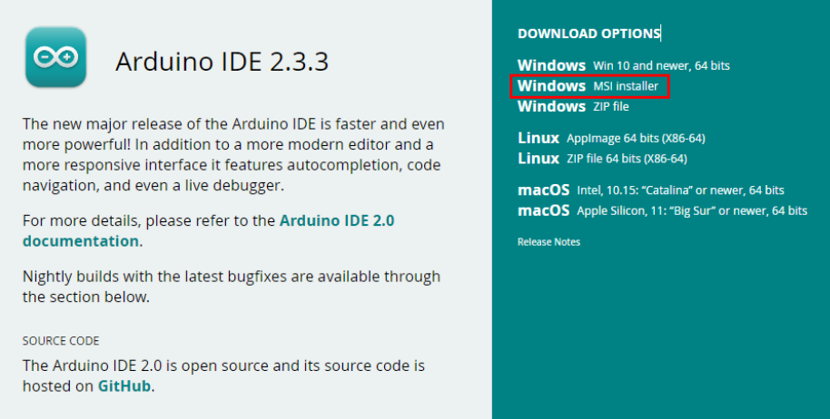
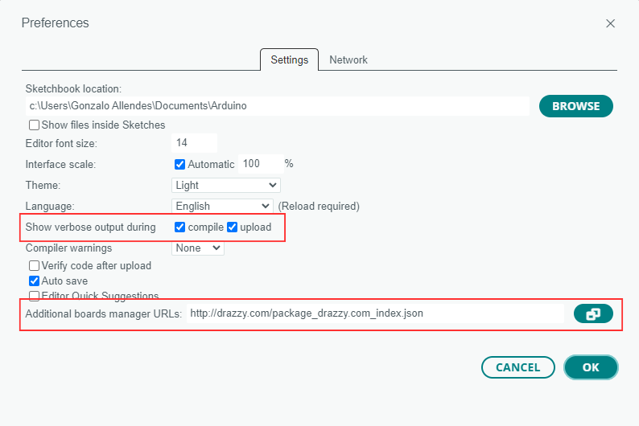
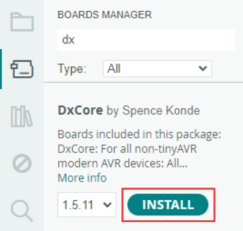

Getting Started
Required Materials
This lab requires the following materials:
- Desktop or Laptop Computer (Windows is highly recommended).
- Web Browser (Chrome, Edge, Firefox).
- Access to the Internet.
Learning Objective
This Guide is designed to equip you with the fundamental skills that you will need while working with Arduino and Curiosity Nano. By completing this Quick Start Guide you will be able to:
- Set up the Arduino development environment. This will include how to download and install the Arduino IDE software.
- Be able to navigate through the Arduino environment. This will include installing the needed board support package for AVR boards.
- Understand Arduino code structure. This will include the core concepts of Arduino programming such as setup(), loop(), pinMode(), digitalWrite() and delay().
Installation Walkthrough
- Go to the Arduino Software page (https://www.arduino.cc/en/software).
- Download and run the MSI Installer (Windows).
- The IDE should be immediately installed. Run it and allow it some time to install dependencies. 
- Go to File \-\> Preferences and under the Settings tab, check **'compile'** and **'upload'** to enable verbose output.
- Under the same tab, click on the icon next to 'Additional Board Manager URLs'
- Copy and paste the following URL into the text box and click OK.
- http://drazzy.com/package_drazzy.com_index.json (Enables access to external microcontroller libraries not included in the default setup)

- Go to the Board Manager by clicking on the second icon from top to bottom on the left panel.
- Type 'DxCore' and click INSTALL. This installs the primary support package. (Arduino had general libraries to support sensors, but as vendors started making boards, board-specific libraries became an independent category of libraries known as core libraries) 
Tour of the Source Files
- Open File Explorer. Go to C:\\Users\\{YourUsername}
- Show hidden files (See Appendix) and go to AppData\\Local\\Arduino15\\packages\\DxCore\\hardware\\megaavr\\1.5.11
- This directory is the collection of C, C++, assembly, and header files that support the AVR Dx microcontroller panel.
- Go to cores\\dxcore.
- Open wiring.c with the IDE of your preference.
- In ***wiring.c*** you will find an implementation of the Wiring API specifically designed for the AVR Dx microcontrollers.
- Check out the millis() function\!

Appendix
Instructions to show hidden files in Windows
- In File Explorer, click the ellipsis icon on the toolbar (...).
- Select Options from the dropdown menu.
- In the Folder Options window, go to the View tab.
- Scroll down and select *Show hidden files, folders, and drives* under 'Advanced settings'.